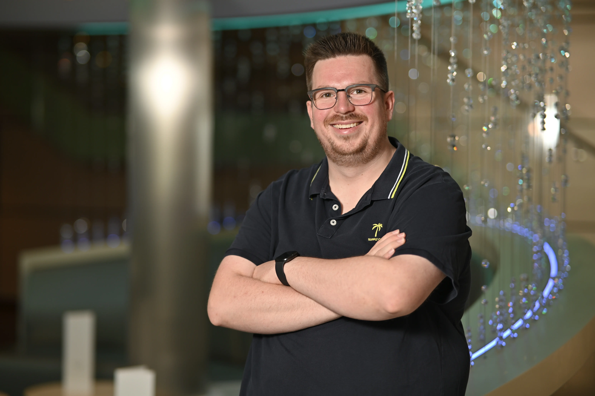

<section class="about" id="about">
    <div class="about__grid">
        <figure class="about__media">
            
        </figure>

        <div class="about__content">
            <p class="eyebrow">Who I Am</p>

            <article class="about__card">
                <h2 class="about__title">About me</h2>

                <p class="about__text">
                    I’m a passionate Frontend Developer with a strong focus on clean code, modern web
                    technologies, and intuitive user experiences. I enjoy turning complex ideas into clear,
                    functional, and visually appealing interfaces.
                </p>

                <ul class="about__list">
                    <li class="about__item">
                        <app-icon name="location_on" class="about__icon"></app-icon>
                        <p class="about__item-text">Based in Germany — open to remote work and flexible collaboration.
                        </p>
                    </li>

                    <li class="about__item">
                        <app-icon name="cognition" class="about__icon"></app-icon>
                        <p class="about__item-text">
                            Open-minded and curious — I love learning new technologies and improving continuously.
                        </p>
                    </li>

                    <li class="about__item">
                        <app-icon name="new_releases" class="about__icon"></app-icon>
                        <p class="about__item-text">
                            Problem-solver mindset — analytical, creative, persistent, and focused on clean, elegant
                            solutions.
                        </p>
                    </li>
                </ul>
            </article>
        </div>
    </div>
</section>